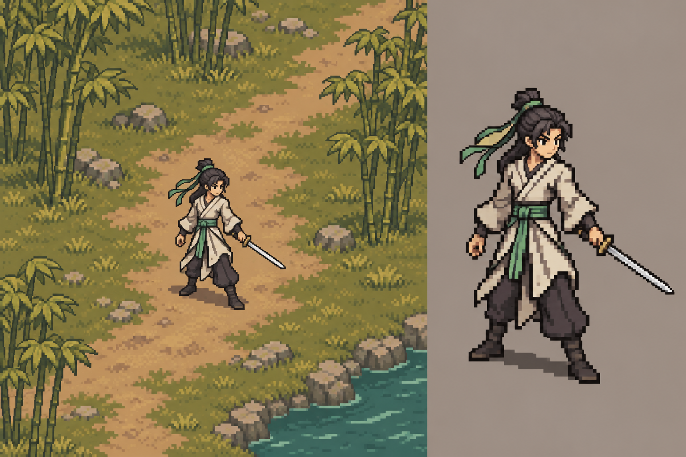

Escolhas visuais do art bible
SpiritOfMurin · 2026-11-25 · apoio às decisões pendentes da revisão final (AD-ART-BIBLE). Tudo aqui é desenhado em pixels nativos e ampliado 3×, como no jogo.
1. Cor dos losangos de vida do jogador
HUD de tinta no canto, sobre um trecho de bambuzal. Cada quadro mostra 3 losangos cheios e 2 vazios, a barra de qi com a marca de limiar (Seção 7.8) e, à direita, uma lâmina inimiga com o lampejo ocre da intenção de ataque, para comparar a vida com o ocre. Use os botões para ver em escala de cinza e com simulação de daltonismo.
Escolha do criador vermelho escuro gasto, tom A #7a3a32 (seção 1b). A vida fica só no HUD, em forma de losango e num canto fixo; o ocre fica só em atores no mundo. A simulação de daltonismo é aproximada: confira também com o Color Oracle.
1b. Os dois tons de vermelho, lado a lado
Mesmo HUD, ampliado 4×. Os botões acima (cinza, daltonismo) também valem aqui.
2. As sete famílias de cor (Seção 4.1)
3. Protagonista: sua referência e as medidas de repouso
Referência do criador

Tomar: túnica marfim de gola cruzada, faixa jade (reduzida ao jade gasto), fita no cabelo, espaço entre a espada e o corpo, calça carvão, barra dividida.
Traduzir: os pés estão abertos como numa guarda e a lâmina está quase horizontal. O repouso pede base estreita com peso atrás e lâmina a ~27° da vertical, com a ponta perto do chão. O verde da faixa e da fita é mais vivo que o jade gasto.
Repouso pela bíblia (esquema, direção S, 1 px = 1 px nativo)
À esquerda, o repouso da Seção 3, 4.1: pé de trás sob o quadril, pé da frente 3 px para o lado e 2–3 px para baixo, base de 9–10 px, lâmina de 22 px a ~27° fora da perna. À direita, a guarda da Seção 5.4: base de 14 px, joelhos flexionados, lâmina erguida diante do tronco. A sua imagem está mais próxima da guarda.
4. Correções de texto (Seções 1 e 2)
Seção 1, exemplo dos três estados
Antes: "repouso com pés juntos e lâmina baixa junto ao corpo…"
Depois: "repouso com pé à frente, peso atrás e lâmina baixa a ~27°, fora da silhueta da perna… Pés juntos não são repouso de combatente: ficam reservados ao NPC neutro (Seção 5.2)."
Seção 2, duelo do discípulo
Antes: lampejo ocre "quando ele fecha a guarda ou contra-ataca".
Depois: lampejo ocre "só quando ele prepara o contra-ataque… fechar a guarda nunca acende ocre". O quadro-resumo passa a dizer "lampejo ocre só no contra-ataque".